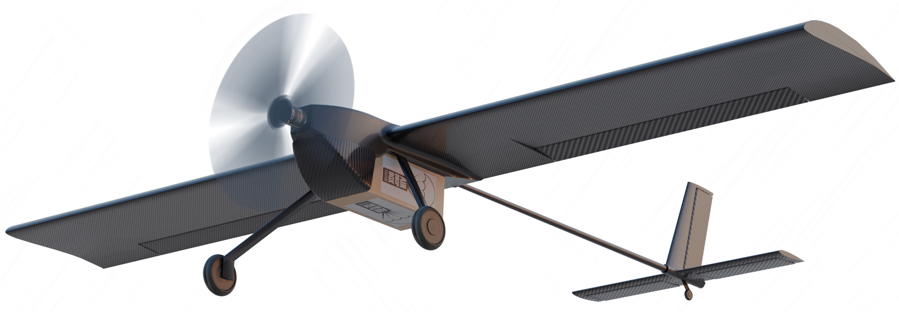

Projects › Caelus › ONE:1
No.03.1
Caelus Sant'Anna
ONE:1
A fully autonomous, carbon-fibre fixed-wing UAV built from scratch by a ten-person student team for the IMechE UAS Challenge.

ONE:1- Role
- Fixed-wing co-founder and lead operations engineer
- Year
- 2024
- Team
- 10 people
- Competition
- IMechE UAS Challenge (UK)
- Payload to aircraft weight
- 1:1 (8 kg / 8 kg)
- Autopilot
- PX4
Design, manufacturing and testing of a fully autonomous fixed-wing UAV for the IMechE UAS Challenge (UK), by a new ten-person student team. In a small team I balanced structural and aerodynamic design with supply chain management and sponsorships, under strict deadlines where any mistake ends in a crash.
01Aerodynamic layout and payload fairing
- Innovative aerodynamic layout: the payload sits outside the main fuselage, with a moving fairing that retracts after the drop.
02Carbon-fibre monocoque
- Full carbon-fibre monocoque: an 8 kg aircraft that carries 8 kg of payload, with short take-off and landing.